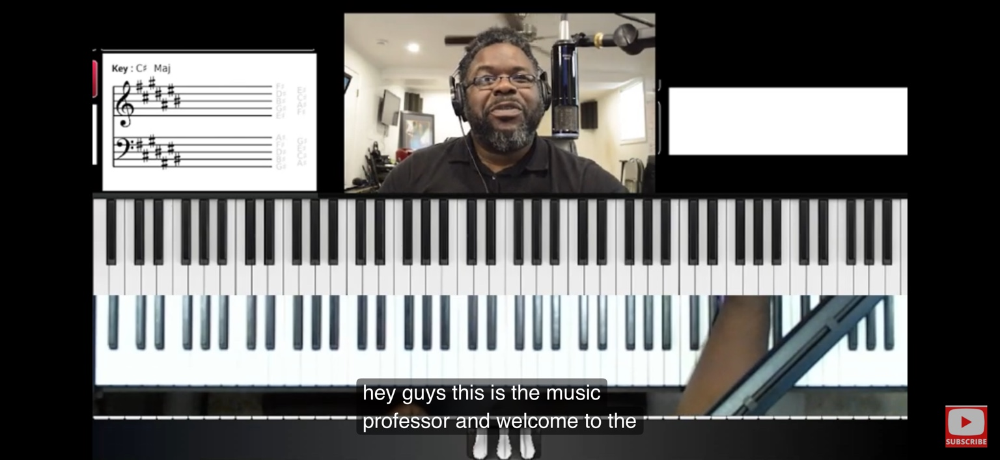
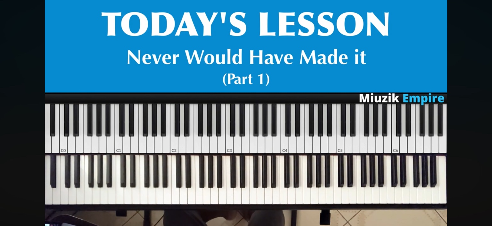

Signal active
Primary camera
Iriun Webcam
1920 × 1080 · 30 fps

See every signal, then decide where it belongs.
1920 × 1080 · 30 fps
Fast enough for a lesson. Precise enough for a record.
Lessons, recordings, and reusable production setups.

Last opened 18 min ago4 scenes · 2 cameras · 18:32 recorded
Make the studio fit your room and workflow.